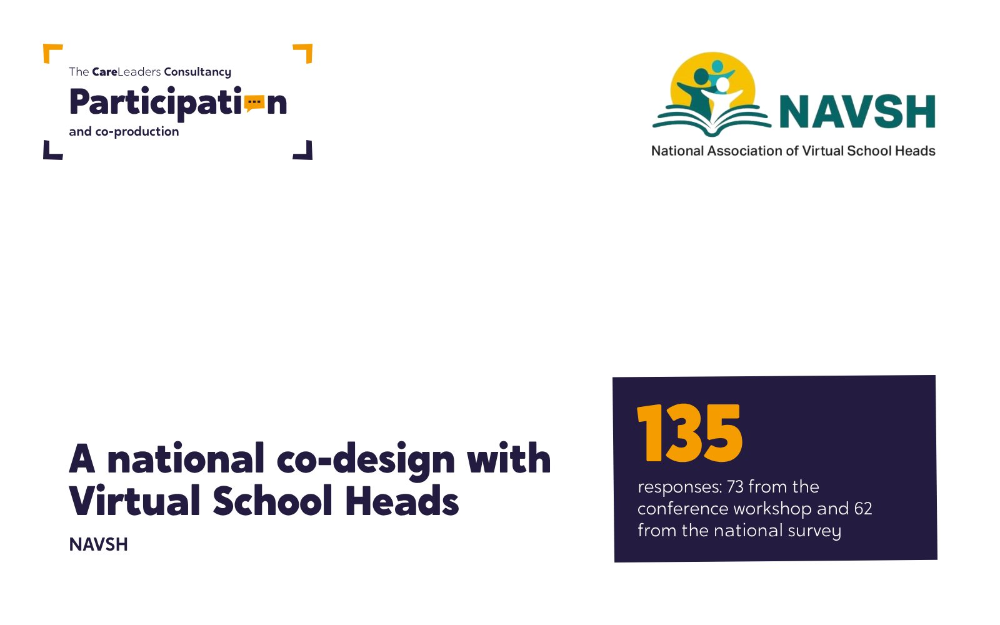
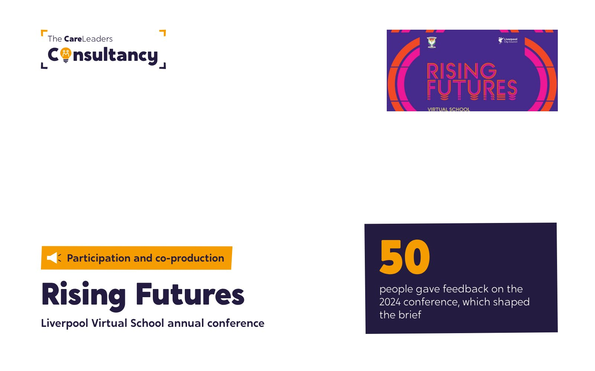
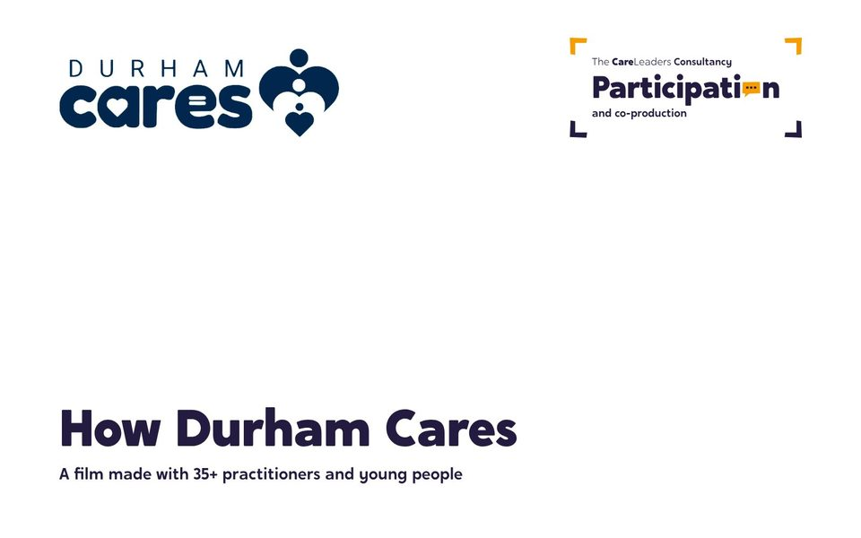
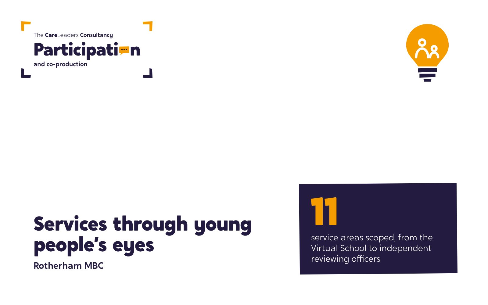
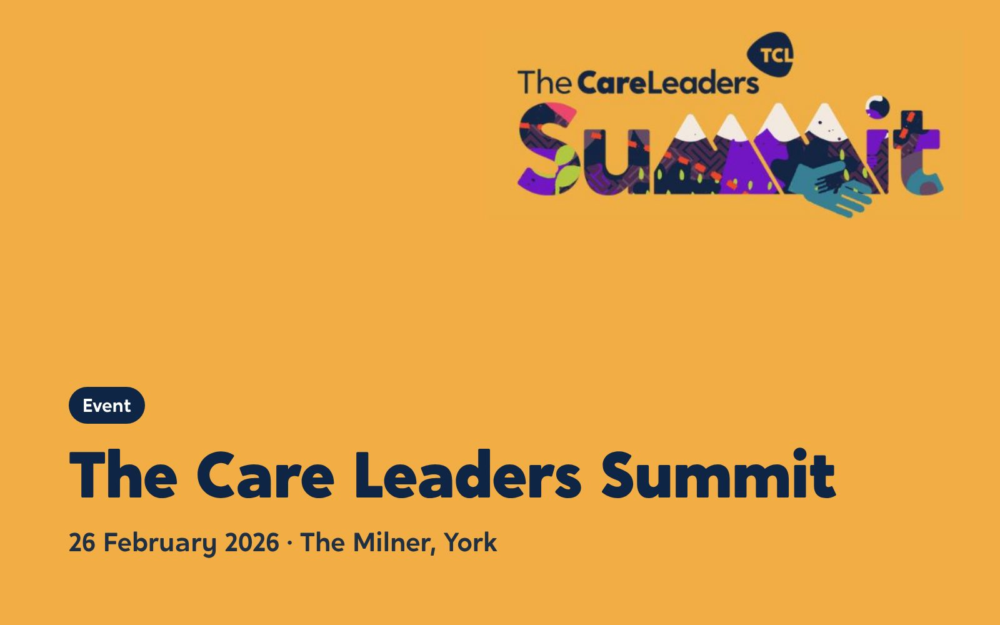

n
nParticipation and co-production
Most services say children’s voices shape their work. Fewer can point to a decision that changed because of them. We build participation that does, designed with young people from the start.

What is participation and co-production?
Participation means children and young people taking part in the decisions that affect them. Co-production goes further: young people and professionals design and deliver something together, as equals. We help you build both into how your service works, so young people’s voices change decisions.
- Youth voice
- Consultations
- Peer research
- Peer mentoring
- Changing decisions
- Children in the room
What we do
A participation strategy and a service structure to deliver it, built with the young people it is for and the staff who run it.
ExampleYouth Voice Bucks, Buckinghamshire
Names, brands and structures for youth voice services, designed by the young people who will use them and own them.
Examplethe South East Youth Participation Collective
Bringing a whole profession or region into a decision, with the methods and the reach to hear from hundreds of people.
Examplethe national engagement on England’s new fostering standards
Young people trained to research and film their own experience of services, so the evidence comes from them directly.
ExampleDurham
Care-experienced adults trained and supported to mentor children in care, with the structure around them to keep it safe.
ExampleBeyond Limits, Norfolk Virtual School
Is this for you?
Services usually come to us when:
Your participation strategy is out of date, or was never written with young people.
Your children in care council meets, but what it says doesn’t reach the people who make decisions.
You need to consult widely on a change, and you want young people’s views to count.
You want young people involved in decisions, but there’s no governance structure for them to be part of, and they haven’t been given the skills to take part.
How commissioning works
Every commission follows the same five steps. Here is what you get at each one.
- 1A conversation
A free call about how young people are heard in your service today.
You get- An honest view on whether we’re the right fit
- A first view of the scope
- 2A short diagnostic
We look at how young people’s voices reach decisions now, and talk to young people and staff.
You get- A map of where voices are heard and where they get lost
- The priorities we would start with
- 3A clear brief
We agree the work, and how young people will lead parts of it.
You get- Named outcomes
- A timeline and a price
- The roles young people will play
- 4The work, done together
Young people co-design, and where it fits, co-deliver.
You get- Regular progress reports
- Products young people have shaped, such as a strategy, a brand or research
- Early sight of drafts
- 5A clean handover
Your staff and young people carry it on.
You get- A strategy or structure your team owns
- Guidance for staff who support it
- A plan to keep young people involved
No surprises. The first call is free. Nothing starts until you have agreed the brief, the outcomes, the timeline and the price.
Previous work
Young people’s voices built into how services work.

The National House Project: Care Leavers National Movement
A national movement led by young people leaving care. 12 care-experienced young people from six councils, trained in leadership.
Read the case study
Regional Care Cooperative, South East: Youth Participation Collective
A regional network of participation workers, and a Shadow Board of 18 Youth Ambassadors, named and branded by young people themselves.
Read the case study
Buckinghamshire Council: Youth Voice Bucks
A participation service young people named, branded and shaped. 19 champions from 11 service areas.
Read the case study
NAVSH: a national co-design with Virtual School Heads
Co-designing the future of the role with the people who do it. 135 responses from a national workshop and survey.
Read the case study
Liverpool Virtual School: Rising Futures
A conference young people helped build. 5 young people designed and ran their own workshop.
Read the case study
Durham County Council: How Durham Cares
A film about how Durham cares, made with the people who do it. 35+ practitioners and young people interviewed for a documentary and seven short films.
Read the case study
Rotherham MBC: services through young people’s eyes
A scope of children’s services through young people’s eyes. 11 service areas scoped, and a new participation model agreed.
Read the case study
The Care Leaders Summit 2026
A national day with care-experienced leaders at the front. 120 places, and 10 Fellows of The Care Leaders Fellowship on the guest list.
Read the case study
Middlesbrough Council: Middlesbrough Children Matter
A vision built with young people, after special measures. 300 staff, young people and partners helped shape it.
Read the case studyQuestions commissioners ask
Do you work directly with our young people?
Yes. Most of our participation work happens in the room with children in care and care leavers, alongside your staff. Read our safeguarding statement.
What does it cost?
It depends on the size of the work. We agree a price in the brief before anything starts, so there are no surprises. Contact us for a price.
How long does it take?
Most work runs for three to 12 months. We set the timeline with you in the brief.
Who do you involve?
Your leaders and staff, your partners, and the children, young people and families who use the service. We agree who’s involved, and how, in the brief.
How do we buy from you?
Smaller pieces are usually a direct award or a quote. Larger pieces may go to tender, and we’re happy to talk before you write the specification.